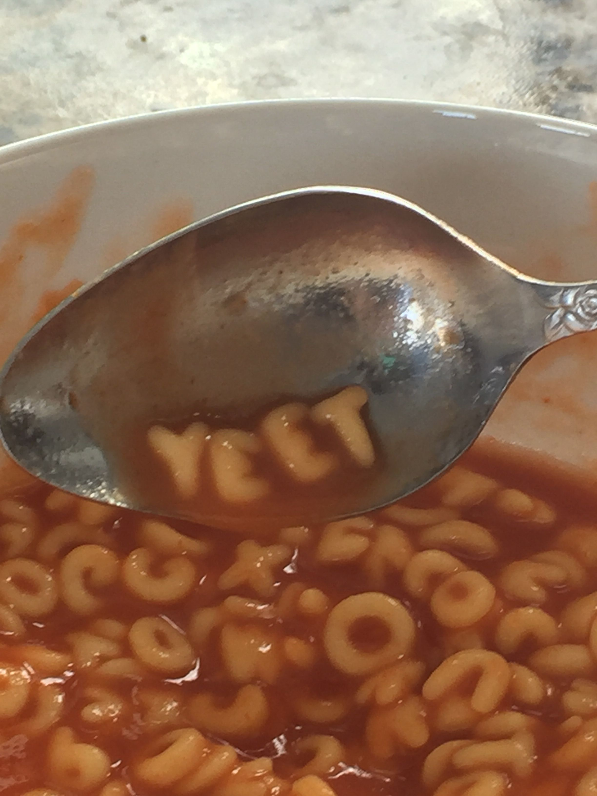

Fresh Tomato Soup

Description
This tomato soup recipe is simple, quick, and perfect to make when tomatoes are ripe in gardens and farmers' markets for a delicious summertime treat.
Ingredients
- Tomato
- Onion
- Garlic
- Broth
Steps
- Boil the tomatoes, onion, garlic, and broth
- Run the mixture through a food mill into a large bowl
- Make a roux
- Add the tomato mixture and season